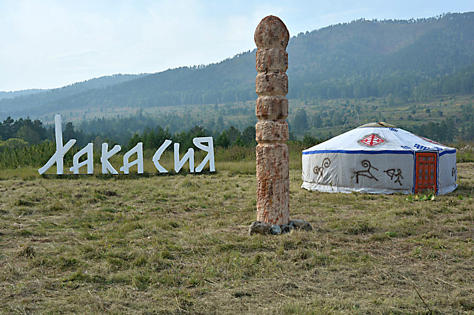
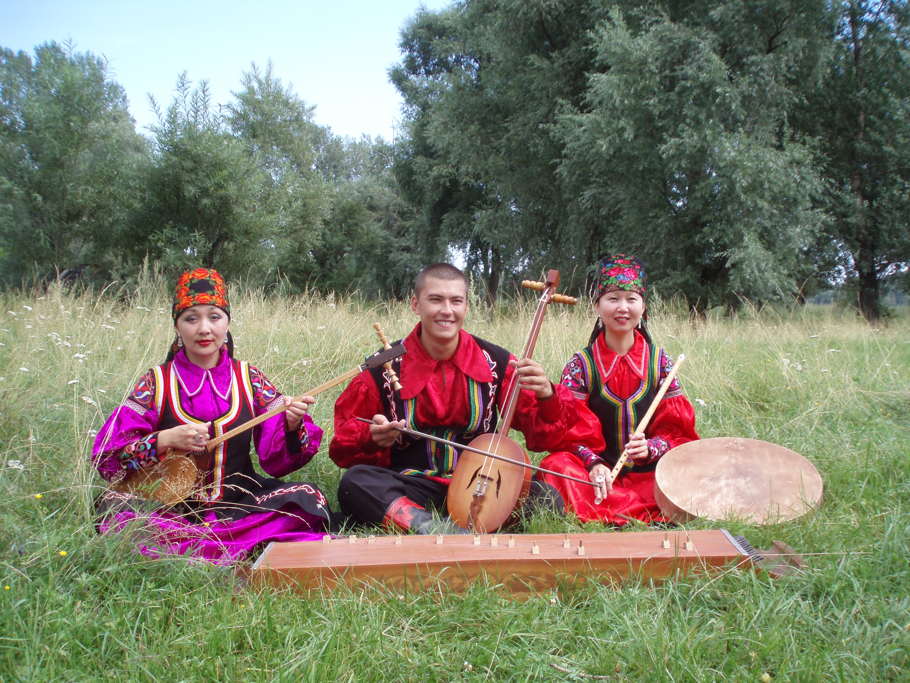

О НАШЕМ РЕГИОНЕ
О регионе

Хакасия расположена в Южной Сибири, в пределах левобережной части среднего течения реки Енисей, на территориях Саяно-Алтайского нагорья и Хакасско-Минусинской котловины.
Природно-ландшафтные зоны: от полупустынь до высокогорья альпийских лугов и тундр.
Протяженность территории с севера на юг – 460 км, с запада на восток (в наиболее широкой части) – 200 км. На севере, востоке и юго-востоке Хакасия граничит с Красноярским краем, на юге – с Республикой Тыва, на юго-западе – с Республикой Алтай, на западе – с Кемеровской областью.
Площадь Республики Хакасия 61 900 км2.
Территория Хакасии разделена на 8 районов. Города республиканского подчинения – Абакан, Абаза, Саяногорск, Сорск, Черногорск. Всего на территории республики 271 населенный пункт.
Численность населения Хакасии составляет 537 тыс. человек, из них 69,4% городское, 30,6% сельское.
История возникновения

Как предполагают ученые, предки человека поселились на территории Саяно-Алтайского нагорья свыше 300 тысяч лет назад, однако самые древние свидетельства освоения человеком пространств Хакасии соотносится с периодом, отстоящим от наших дней на 80-100 тысяч лет.
С древнейших времен Хакасия имела караванные пути, связывающие ее с Монголией, Китаем, Тибетом и Индией. В эпоху Кыргызского каганата (VI-XIII вв.) существовала ветвь Великого шелкового пути, которая соединяла Хакасию с Тувой. Этот путь упоминался еще в древнетюркских рунических памятниках VII–VIII вв.
В марте 1707 года царь Петр I подписал Указ о сооружении острога в Хакасии, который был построен за 15 дней, с 4 по 18 августа 1707 года. Это событие и знаменует начало процесса вхождения Хакасии в состав России.
Датой же официального включения территории Хакасии в состав Российской империей можно считать 20 августа 1727 года, когда между Россией и Китаем был заключён Буринский (или Кяхтинский) пограничный трактат.